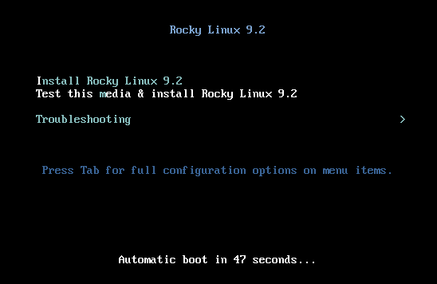
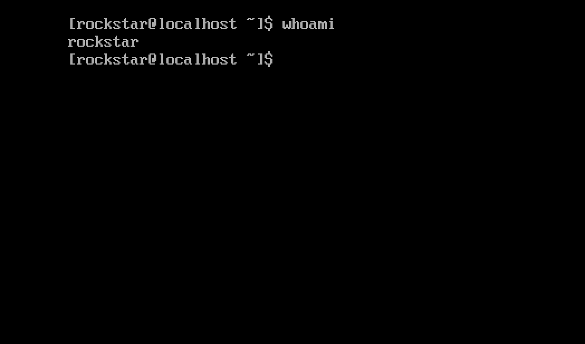

Installing Rocky Linux 9¶
This is a detailed guide for installing a 64-bit version of the Rocky Linux distribution on a standalone system. We will be performing a server class install. We will step through the installation and customization steps in the following sections.
OS Installation Prerequisites¶
Download the ISO to use for this installation of Rocky Linux. You can download the latest ISO image for the version of Rocky Linux for this installation here:
To download the ISO directly from the command line on an existing Linux based system use the wget command:
Rocky Linux ISOs follow this naming convention:
For example, Rocky-9.2-x86_64-minimal.iso
Note
The Rocky project web page lists several mirrors, which are located around the globe. Choose the mirror geographically closest to you. The list ofofficial mirrors can be found here.
Verifying the Installation Program ISO File¶
If you've downloaded the Rocky Linux ISO(s) on an existing Linux distribution, you can use the sha256sum utility to verify that file(s) you downloaded are not corrupt. We will show an example of how to verify the Rocky-9.2-x86_64-minimal.iso file by checking its checksum.
-
Download the file that contains the official checksums for the available ISOs.
-
While still in the folder that contains the downloaded Rocky Linux ISO, download the checksum file for the ISO, type:
-
Use the
sha256sumutility to verify the integrity of the ISO file against corruption or tampering.This checks the integrity of the ISO file downloaded previously, provided that it is in the same directory. The output should show:
The Installation¶
Tip
Before starting the installation proper, the system’s Unified Extensible Firmware Interface (UEFI) or Basic Input/Output System (BIOS) should be preconfigured to boot from the correct medium.
If the computer is setup to boot from the media that has the ISO file, we can begin the installation process.
-
Insert and boot from the installation medium (optical disk, USB flash drive, and so on).
-
Once the computer has booted you see the Rocky Linux 9 welcome splash screen.

-
If you do not press any key, the installation program starts a countdown, after which the installation process automatically executes the default, highlighted, option:
Test this media & install Rocky Linux 9.2You can also press Enter at any time to start the process immediately.
-
A quick media verification step takes place. This media verification step can save you the trouble of starting the installation only to find out halfway through that the installation program has to stop because of bad installation media.
-
After the media check runs to completion and the media is successfully verified to be usable, the installation program automatically continues to the next screen.
-
Select the language you want to use to perform the installation in this screen. For this guide, we select English (United States). Then click the Continue button.
Installation Summary¶
The Installation Summary screen is an all-in-one area where you make the important decisions about the system to be installed.
The screen is roughly divided into the following sections:
- LOCALIZATION
- SOFTWARE
- SYSTEM
- USER SETTINGS
We will delve into each of these sections next and make changes where necessary.
Localization Section¶
This section is used for customizing items related to the geographic locality of the system. This includes – Keyboard, Language Support, Time and Date.
Keyboard¶
On our demo system in this guide, we accept the default value (English US) and make no changes.
However, if you need to make any changes here, from the Installation Summary screen, click the Keyboard option to specify the keyboard layout of the system. Using the + button, you can add additional keyboard layouts if you need to in the ensuing screen and even specify your preferred order.
Click Done when you are finished with this screen.
Language Support¶
The Language Support option on the Installation Summary screen enables you to specify support for additional languages.
We will accept the default value - English (United States) and make no change, click Done.
Time & Date¶
Click the Time & Date option on the main Installation Summary screen to bring up another screen that will allow you to select the time zone in which the machine is located. Scroll through the list of regions and cities and select the area closest to you.
Depending on your installation source, the Network Time option could be set to ON or OFF by default. Accept the default ON setting; this allows the system to automatically set the correct time using the Network Time Protocol (NTP).
Click Done after making any changes.
Software Section¶
Under the Software section of the Installation Summary screen, you can select or change the installation source as well as additional packages (applications) that get installed.
Installation Source¶
Because the installation uses a Rocky Linux 9 ISO image, you will notice that Local Media is automatically specified under the Installation Source section of the main Installation Summary screen. You can accept the preset defaults.
Tip
The installation Source area is where you can opt to perform a network-based installation (for example if you are using the Rocky Linux boot ISO - Rocky-9.2-x86_64-boot.iso). For a network-based installation, you need to first ensure that a network adapter on the target system is properly configured, and is able to reach the internet. To perform a network-based installation, click on Installation Source and then select the On the network radio button. Once selected, choose https as the protocol and type the following URL in the text field download.rockylinux.org/pub/rocky/9/BaseOS/x86_64/os. Click Done.
Software Selection¶
Clicking the Software Selection option on the main Installation Summary screen presents you with the section of the installation where you can pick the exact software packages that get installed on the system. The software selection area is divided into:
- Base Environment: Minimal Install and Custom operating system
- Additional software for Selected Environment: Selecting a Base Environment on the left side presents a variety of related additional software to install for the given environment on the right side. Note that this is only applicable if you were installing from a full Rocky Linux 9.2 DVD or if you have additional repositories configured.
Select the Minimal Install (Basic functionality) option.
Click Done at the top of the screen.
System Section¶
The System section of the Installation Summary screen is used for customizing and making changes to things related to the underlying hardware of the target system. This is where you create your hard disk drive partitions or volumes, specify the file system, specify the network configuration, enable or disable KDUMP or select a Security Profile.
Installation Destination¶
From the Installation Summary screen, click the Installation Destination option. This takes you to the corresponding task area.
You will see a screen displaying all the candidate disk drives that you have available on the target system. If you have only one disk drive on the system, as on our sample system, you see the drive listed under Local Standard Disks with a check mark beside it. Clicking the disk icon will toggle on or off the disk selection check mark. Keep it checked to select the disk.
Under the Storage Configuration section:
-
Select the Automatic radio button.
-
Click Done at the top of the screen.
-
Once the installation program determines that you have a usable disk, it returns to the Installation Summary screen.
Network & Host Name¶
The next important task of the installation procedure under the System area deals with network configuration, where you can configure or tweak network-related settings for the system.
Note
After you click on the Network & Hostname option, all correctly detected network interface hardware (such as Ethernet, wireless network cards, and so on) will be listed in the left pane of the network configuration screen. Depending on your specific hardware setup, Ethernet devices in Linux have names similar to eth0, eth1, ens3, ens4, em1, em2, p1p1, enp0s3 and so on.
For each interface, you can either configure it using DHCP or manually set the IP address.
If you choose to configure manually, be sure to have all the required information ready, such as the IP address, netmask, and so on.
Clicking the Network & Hostname button in the main Installation Summary screen opens the corresponding configuration screen. Among other things, you have the option to configure the hostname of the system.
Note
You can easily change the system hostname later on after the OS has been installed.
The next important configuration task is related to the network interfaces on the system.
- Verify that the left pane lists an Ethernet card (or any network card.)
- Click any of the detected network devices in the left pane to select it. The configurable properties of the selected network adapter appear in the right pane of the screen.
Note
On our sample system, we have two Ethernet devices ens3 and ens4, all of which are in a connected state. The type, name, quantity, and state of the network devices on your system may vary from the ones on our demo system.
Verify the switch of the device you want to configure is flipped to the ON (blue) position in the right pane.
We'll accept all the defaults in this section.
Click Done to return to the main Installation Summary screen.
Warning
Pay attention to the IP address of the server in this section of this installer. If you don’t have physical or easy console access to the system, this information will come in handy later on when you need to connect to the server to continue working on it after the OS installation is completed.
User Settings Section¶
This section can be used for creating a password for the root user account and also for creating new administrative or non-administrative accounts.
Root Password¶
-
Click the Root Password field under User Settings to start the Root Password task screen.
Warning
The root superuser is the most privileged account on the system. Therefore, if you choose to use or enable it, it is crucial that you protect this account with a strong password.
-
In the Root Password text box, set a strong password for the root user.
-
Enter the same password again in the Confirm text box.
-
Click Done.
User Creation¶
To create a user:
-
Click the User Creation field under User Settings to start the Create User task screen. This task area allows you to create a privileged or non-privileged (non-administrative) user account on the system.
Info
Creating and using a non-privileged account for day-to-day tasks on a system is a good system administration practice.
We’ll create a regular user that can invoke superuser (administrator) powers when needed.
-
Complete the fields in the Create User screen with the following information:
- Full name:
rockstar - Username:
rockstar - Make this user administrator: Checked
- Require a password to use this account: Checked
- Password:
04302021 - Confirm password:
04302021
- Full name:
-
Click Done.
Installer Phase¶
Once you are satisfied with your choices for the various installation tasks, the next phase of the installation process will begin the installation proper.
Start the Installation¶
Once you are satisfied with your choices for the various installation tasks, click the Begin Installation button on the main Installation Summary screen.
The installation will begin, and the installation program will show the progress of the installation. After the installation begins, various tasks will begin running in the background, such as partitioning the disk, formatting the partitions or LVM volumes, checking for and resolving software dependencies, writing the operating system to the disk, and so on.
Note
If you do not wish to continue after clicking the Begin Installation button, you can still safely back out of the installation without any loss of data. To quit the installer, simply reset your system either by clicking the Quit button, pressing ctrl-alt-del on the keyboard, or pushing the reset or power switch.
Complete the Installation¶
After the installation program has run its course, you see a final installation progress screen with a complete message.
Finally, complete the entire procedure by clicking the Reboot System button. The system restarts.
Log In¶
The system is now set up and ready for use. You will see the Rocky Linux console.
To log onto the system:
-
Type
rockstarat the login prompt and press Enter. -
At the Password prompt, type
04302021(rockstar’s password) and press Enter (the password will not be echoed to the screen, that is normal). -
Run the
whoamicommand after login. This command shows the name of the currently logged in user.
